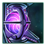

Megastructures
Megastructures are colossal constructions. Expensive and time-consuming to build or repair, these remarkable feats of engineering are nonetheless important wonders that provide large bonuses, demonstrating the technological and economic primacy of the builders' empire. They cannot be built in orbit of a celestial object that has an uninvestigated anomaly. All megastructures except  Gateways are destroyed if a Star-Eater destroys the system and cannot be restored after.
Gateways are destroyed if a Star-Eater destroys the system and cannot be restored after.
 Nomadic empires need waylines to build megastructures and can't build habitats, deep space citadels, orbital rings, or any multi-stage megastructure except Quantum Catapult, Arc Furnace, and Ambition-related megastructures. They cannot research the technologies to build other megastructures and even if they researched them before becoming
Nomadic empires need waylines to build megastructures and can't build habitats, deep space citadels, orbital rings, or any multi-stage megastructure except Quantum Catapult, Arc Furnace, and Ambition-related megastructures. They cannot research the technologies to build other megastructures and even if they researched them before becoming  Nomadic they can't build other megastructures.
Nomadic they can't build other megastructures.
Construction
All megastructures require a construction ship for their initial stage; later stages do not. Many megastructures have different visual textures depending on the ship appearance of the empire that built or restored them.
Each stage of a megastructure has a required time to build measured in days. By default, construction progress is equal to 1 per day. The following factors modify this, generally increasing the rate such as progress might be 1.5, 2, or even more per day. Thus, a megastructure stage that requires 3600 days (10 years) can be completed in fewer than 3600 days.
| Megastructure construction speed | |
|---|---|
| Source | Effect |
| +300% | |
| +50% | |
| +50% | |
| +50% | |
| +10% | |
| Secrets of the Cybrex empire modifier | +10% |
| +5% | |
FTL megastructures
FTL megastructures can only be constructed at the edge of a system and allow fleets to traverse to an identical megastructure, greatly easing travel across the galaxy. They work together with the FTL megastructures of another empire unless borders are closed or the empires are at war with each other. FTL megastructures can be constructed in any system which doesn't already have that type of megastructure. They can also be dismantled if the empire has the technology to build them and is at peace. Unlike other megastructures, they can be constructed in the systems of subjects as well.
Gateways

While exploring the galaxy, empires may find abandoned  gateways that were once part of a massive, galaxy-spanning network. The number of abandoned gateways can be scaled or disabled by galaxy settings. Note that even if gateways are disabled, at least one gateway will exist in the galaxy if any empire has the
gateways that were once part of a massive, galaxy-spanning network. The number of abandoned gateways can be scaled or disabled by galaxy settings. Note that even if gateways are disabled, at least one gateway will exist in the galaxy if any empire has the  Galactic Doorstep or
Galactic Doorstep or  Imperial Fiefdom origin.
Imperial Fiefdom origin.
Once an abandoned gateway is discovered, the  Gateway Activation technology can be drawn; this technology allows abandoned gateways to be repaired. Repairing an abandoned gateway takes 2 years and costs
Gateway Activation technology can be drawn; this technology allows abandoned gateways to be repaired. Repairing an abandoned gateway takes 2 years and costs  6000 energy and
6000 energy and  2500 alloys. When a gateway is activated for the first time in the galaxy, another random gateway is also activated along with it.
2500 alloys. When a gateway is activated for the first time in the galaxy, another random gateway is also activated along with it.
Gateways allow travel to any other gateway instantly, so long as the borders are open and the destination is not controlled by an enemy empire. As a bypass, Gateways generally act like a hyperlane connection between systems, such that claims can be extended through them, however sectors do not extend through gateways. Dismantling a gateway costs  2500 Energy and takes 1 year.
2500 Energy and takes 1 year.
Once the  Gateway Activation technology is researched, the
Gateway Activation technology is researched, the  Gateway Construction technology can appear, which allows new gateways to be constructed. Gateways are constructed in two stages. The first stage requires a construction ship to place the site outside the system's gravity wall. The second stage does not require a construction ship.
Gateway Construction technology can appear, which allows new gateways to be constructed. Gateways are constructed in two stages. The first stage requires a construction ship to place the site outside the system's gravity wall. The second stage does not require a construction ship.
| Stage | Mechanical cost | Biological cost | |
|---|---|---|---|
| Gateway Site | 3 years |
|
|
| Gateway | 5 years |
|
|
|
|
Available only with the Galactic Paragons DLC enabled. |
Repairing any gateway has a 20% chance to discover the legendary paragon, Skrand Sharpbeak; this chance increases to 50% on subsequent repairs or if the planet Skravird has been discovered. If the empire has the  Galactic Doorstep origin, the chance is 33% for the first gateway and 67% for subsequent gateways or if Skravird has been discovered.
Galactic Doorstep origin, the chance is 33% for the first gateway and 67% for subsequent gateways or if Skravird has been discovered.
- L-Gates
|
|
Available only with the Distant Stars DLC enabled. |
 L-gates are a special type of gateway, with a separate network from regular gateways. Instead of jumping from any to any, L-Gates all jump to the Terminal Egress system in the L-Cluster, then from there to any other L-Gate, so long as that system's borders are open or the fleet's owner is at war with the system's owner. L-Gates are opened through a special project, and new L-Gates cannot be constructed.
L-gates are a special type of gateway, with a separate network from regular gateways. Instead of jumping from any to any, L-Gates all jump to the Terminal Egress system in the L-Cluster, then from there to any other L-Gate, so long as that system's borders are open or the fleet's owner is at war with the system's owner. L-Gates are opened through a special project, and new L-Gates cannot be constructed.
Hyper Relays

|
|
Available only with the Overlord DLC enabled. |
Constructing a Hyper Relay takes one year and has the following cost:
- 25
 Influence
Influence - 100
 Rare Crystals
Rare Crystals - 500
 Alloys if the empire uses a Mechanical shipset
Alloys if the empire uses a Mechanical shipset - 250 Alloys and 875
 Food if the empire uses a Biological shipset
Food if the empire uses a Biological shipset
Hyper Relays can grant additional effects based on  edicts and subject specializations. Hyper Relay edicts require the empire's capital system to be part of the network, while the benefits granted by subject specializations require a connection between the overlord's capital and the subject's capital. Subjects do not benefit from their overlord's network effects.
edicts and subject specializations. Hyper Relay edicts require the empire's capital system to be part of the network, while the benefits granted by subject specializations require a connection between the overlord's capital and the subject's capital. Subjects do not benefit from their overlord's network effects.
Hyper Relays can be built from the galaxy view, which places them semi-randomly within the system. In systems with  wormholes or existing
wormholes or existing  gateways, it is recommended to instead go into the system view to manually place the Hyper Relay near to the wormhole or gateway to better facilitate travel, as Hyper Relays do not connect through wormholes or gateways.
gateways, it is recommended to instead go into the system view to manually place the Hyper Relay near to the wormhole or gateway to better facilitate travel, as Hyper Relays do not connect through wormholes or gateways.
Habitats
Habitats are colonizable megastructures that can be built above stars or planets and are finished in a single stage. Each system can only have one habitat. The habitat still requires colonization, but the colony develops twice as fast as on planets. Habitats cannot be built in systems with a ring world, above moons, or above celestial objects with another megastructure. Hovering over the megastructure in the build menu will list in the tooltip the owned systems that offer most districts. Building a habitat requires the  Orbital Habitats technology, takes 5 years and costs 200
Orbital Habitats technology, takes 5 years and costs 200  Influence as well as the following:
Influence as well as the following:
- 1500 Alloys if the empire uses a Mechanical shipset
- 750 Alloys and 2625 Food if the empire uses a Biological shipset
The maximum number of districts that a habitat can have is 0.25 per planet or star in the system for each habitat tier. The maximum number for each type of resource district depends on the  Energy,
Energy,  Minerals and
Minerals and  Research deposits in the system (deposits of unity and rare resources count as research for this purpose). Each deposit grants (1 + half of its value) districts, rounded down. Each time a resource district is constructed it creates an orbital on a celestial body with its resource if any is still available, replacing any existing mining or research station. Orbitals are identical in effects and upkeep to mining and research stations but cannot be attacked by fleets. Habitats do not have planetary features with the exception of a few unique habitats.
Research deposits in the system (deposits of unity and rare resources count as research for this purpose). Each deposit grants (1 + half of its value) districts, rounded down. Each time a resource district is constructed it creates an orbital on a celestial body with its resource if any is still available, replacing any existing mining or research station. Orbitals are identical in effects and upkeep to mining and research stations but cannot be attacked by fleets. Habitats do not have planetary features with the exception of a few unique habitats.
Only  Gestalt Consciousness,
Gestalt Consciousness,  Void Dwellers or empires with the
Void Dwellers or empires with the  Voidborne ascension perk can construct housing buildings on habitats.
Voidborne ascension perk can construct housing buildings on habitats.
Habitats are shown in one of three tiers in the outliner, depending on the level of the capital building.
| Tier | Building | per planet or star |
building slots |
Required technology | ||
|---|---|---|---|---|---|---|
| I | 40% | +0.25 | +1 | 0 | ||
| II | 50% | +0.5 | +2 | 1000 | ||
| III | 60% | +0.75 | +3 | 2500 |
Habitats can also be obtained in the following ways:
- The Federation's End unique system can randomly spawn, containing two habitats. The system does not require any DLC to spawn but does not contain enough celestial objects to support districts.
 Empires with the
Empires with the  Void Dwellers origin start with a habitat and the technology to build more. They also gain the technology to upgrade them as a permanent research option.
Void Dwellers origin start with a habitat and the technology to build more. They also gain the technology to upgrade them as a permanent research option. Empires with the
Empires with the  Knights of the Toxic God origin start with a habitat in their home system. They also gain the technology to build more as a permanent research option.
Knights of the Toxic God origin start with a habitat in their home system. They also gain the technology to build more as a permanent research option. Empires with the
Empires with the  Payback origin can gain a unique size 10 habitat called Recovered Asset as one of their two choices following the conclusion of the The Aftermath of Battle archaeological site, along with the technology to build more.
Payback origin can gain a unique size 10 habitat called Recovered Asset as one of their two choices following the conclusion of the The Aftermath of Battle archaeological site, along with the technology to build more.- If the First Contact DLC is active, the Ithome cluster has a 25% chance to spawn. The Ithome's Gate system contains 3 habitats. Each habitat has a unique modifier granting it max
 Habitability and +8
Habitability and +8  Reactor, Mining or Research districts.
Reactor, Mining or Research districts.  If the Apocalypse DLC is active, empires created by the Horde breaking up start with the technology to construct habitats. These habitats can be captured by other empires.
If the Apocalypse DLC is active, empires created by the Horde breaking up start with the technology to construct habitats. These habitats can be captured by other empires. If the Cosmic Storms DLC is active, a habitat can be obtained by completing the Hold the Line archaeological site.
If the Cosmic Storms DLC is active, a habitat can be obtained by completing the Hold the Line archaeological site.
Habitat Central Complexes can be ruined by a colossus or crises. If ruined, all orbitals are destroyed.
Deep space citadels

Deep space citadels are large defensive stations that can contain certain starbase buildings and can support defense platforms. Similar to a starbase, when a deep space citadel runs out of hull points it is occupied if the attacker was an empire and destroyed if the attacker was a crisis or using the Existential Expulsion casus belli.
Normally only Fallen Empire systems have deep space citadels, but if the  BioGenesis DLC is enabled all empires can research the technology to construct their own. Deep space citadels can be constructed anywhere in a system. Each system can have one deep space citadel, and the number is increased by one for each of the following:
BioGenesis DLC is enabled all empires can research the technology to construct their own. Deep space citadels can be constructed anywhere in a system. Each system can have one deep space citadel, and the number is increased by one for each of the following:
 Eternal Vigilance ascension perk
Eternal Vigilance ascension perk Starlit Citadel origin
Starlit Citadel origin
Deep space citadels are designed in the ship designer and when constructing or upgrading one there will be a prompt to choose which design to use. Their cost is not affected by the installed components. Deep space citadels come in three tiers. They are constructed at tier I and then upgraded. Deep space citadels can have their design changed if the empire has the technology to build them but the current construction or upgrade cost must be paid again.
| Tier | Buildings | Weapon slots | Utility slots | Mechanical cost | Biological cost | Build time |
|---|---|---|---|---|---|---|
|
|
|
|
|
|
3 years | |
|
|
|
|
|
|
3 years | |
|
|
|
|
|
|
4 years |
Orbital rings
|
|
Available only with the Overlord DLC enabled. |
Orbital Rings can be built around colonized planets to act as an additional starbase in the system and provide useful bonuses for the planet below. They do not require a construction site and are finished in a single stage by the construction ship. Tier 2 and 3 are upgraded similarly to starbases without the need for a construction ship. Orbital rings can be downgraded and at tier 1 can be dismantled, which does not cost any resources. Orbital rings also have  +100% fire rate.
+100% fire rate.
If an Orbital Ring is defeated by a crisis it will be ruined. The megastructure can only be rebuild if the planet is controlled so either the system will have to be reclaimed before the crisis can purge the planet or the planet will have to be terraformed and recolonized.
Modules
Orbital Rings use their own set of modules, which are mostly similar to Starbase modules. An  Orbital Assembly Complex holding on the planet provides additional bonuses to each module.
Orbital Assembly Complex holding on the planet provides additional bonuses to each module.
| Module | Time | Cost | Upkeep | Effects | Required technology | ||
|---|---|---|---|---|---|---|---|
 Orbital Anchorage Fleet anchorages are necessary to support the growth of our navy. |
|
||||||
 Orbital Vivarium Tank External tanks partially exposed to space that can safely house captured Space Fauna. |
|
||||||
 Habitation Module High-speed space elevators allow the planet to extend its habitation, resource storage and refinement facilities into orbit. |
Fleet modules
Fleet modules allow the orbital ring to construct utility ships as well as either military ships or space fauna. Multiple fleet modules may be constructed to produce multiple ships or space fauna in parallel but only one type of fleet module can be constructed on an orbital ring. Both fleet modules 50  alloys, takes
alloys, takes  180 days to construct and has an
180 days to construct and has an  energy upkeep of 1 unit per month. Each fleet module can produce two ships or space fauna at a time instead of one if an
energy upkeep of 1 unit per month. Each fleet module can produce two ships or space fauna at a time instead of one if an  Orbital Assembly Complex is constructed on the planet.
Orbital Assembly Complex is constructed on the planet.
| Module | Can produce | Vivarium capacity | Requirements | |
|---|---|---|---|---|
| Military ships | Space fauna | |||
 Orbital Shipyard A Shipyard may build one ship at a time, in parallel with other Shipyards. |
||||
 Orbital Beastport Beastports are specialized facilities that can clone Space Fauna and construct Utility Ships. |
||||
Defenses
Defense modules increase the orbital ring's effectiveness in combat and allow for the construction of additional defense platforms. Each defense module costs 120  alloys, takes
alloys, takes  180 days to construct and has an
180 days to construct and has an  energy upkeep of 1 unit per month.
energy upkeep of 1 unit per month.
| Module | Weapons added | Other effects | Required technology | |
|---|---|---|---|---|
 Planetary Defense Guns Adds two medium-size weapon slots to the Orbital Ring. |
|
|||
 Planetary Defense Batteries Adds two guided weapon slots to the Orbital Ring. |
||||
 Planetary Defense Hangars Adds a hangar for Strike Craft to the Orbital Ring. |
Buildings
In addition to most of the regular starbase buildings, Orbital Rings can construct a set of buildings that improve the planet's output. All of them take  360 days to build.
360 days to build.
| Building | Cost | Upkeep | Planet effects | Requirements |
|---|---|---|---|---|
 Climate Optimization Stations Detailed monitoring of local conditions means we can influence the planet's climate at a regional level, increasing agricultural yields. |
|
|
||
 Low Gravity Mega-Refiners Centralizing mineral refining operations on the Orbital Ring allows for novel techniques that increase mining efficiency. |
|
|
||
 Stratospheric Ionization Elements These devices dramatically reduce power loss during distribution, increasing overall generator output. |
|
|
||
 The Giga-Mall Moving all shopping and trade facilities to the Orbital Ring means our Clerks can facilitate more business, more effectively than ever before. |
|
|
|
|
 Alloy Processing Facilities Alloys from the surface are further processed in orbit, creating usable materials from what would otherwise be wasted by-products. |
|
|
|
|
 Orbital Logistics Systems Transferring logistics operations to automated systems on the Orbital Ring allows planetside Factories to run continuously at full speed. |
|
|
|
|
 Orbital Filing System Efficiency and progress can be ours once more, now that our Administrators have near instant access to the paperwork that defines their lives. |
|
|
||
 Synaptic Relays Portions of the Orbital Ring have been modified to enhance synaptic signals, improving control over drones on the surface. |
|
|
||
 Orbital Maintenance Drops Prepackaged pods of maintenance material - and the drones necessary to distribute them - can be dropped from orbit anywhere they are needed, at a moment's notice. |
|
|
||
 Orbital Garden A vacuum garden for our Orbital Ring, blooming with genetically enhanced plantlife designed to attract spaceborne fauna. |
|
|
|
|
 Orbital Shield Generator Hardening the shields of the orbital defenses will interfere with any planetary shields, but will allow them to hold off against more powerful weapons. |
|
|
|
|
Planetary building replacements
The following orbital ring buildings fulfill the same function as certain planet buildings. They have the same requirements to construct and cannot be built if the matching building has been constructed on the planet.
| Building | Cost | Upkeep | Planet effects | Replaced building | Requirements |
|---|---|---|---|---|---|
 Orbital Embassy Complex This orbital complex is intended to awe the viewer, rendering them more compliant in negotiations. Due to the need to be close to the seat of the government, it can only be built in orbit of our capital. |
|
|
|
|
|
 Orbital Stock Exchange By engaging in free trade of goods and services we allow for a more specialized economy, where an individual can excel in a narrow field and trade for their needs. |
|
|
|
| |
 Orbital Psi Corps A segment of the Orbital Ring is devoted to training psi-gifted individuals, allowing the Psi Corps to keep a watchful eye on the planet below. The Psi Corps is your friend. Trust the Corps. |
|
|
|
| |
 Noble Estates Magnificent structures that take advantage of reduced gravitational effect in orbit house the local nobility. Significant portions of the ring are dedicated to their every whim. |
|
|
|
| |
 Orbital Slave Processing Hub An orbital facility used to process slave labor for the planet below. Those that have been processed have any trace of free will extinguished. |
|
|
|
|
Multi-stage megastructures
Multi-stage megastructures are constructed in multiple stages that require the technology with the same name before they can be constructed. Empires lacking the technology can make use of a multi-stage megastructure which they conquered from another empire, but they cannot upgrade it before they research the prerequisite technology.
Multi-stage megastructures start with a construction site that provides no benefit. However, each subsequent construction phase brings increasing bonuses, culminating with the end of the megastructure construction.
Only one multi-stage megastructure may be built in each system. Multi-stage megastructures must be built either over an uninhabitable planet or a star. There must not be an anomaly present on the planet or star, but an anomaly on another planet or star in the system does not block construction.
Each empire can build build, upgrade, or restore only one multi-stage megastructure at a time. This limit is increased by the following factors:
| Megastructure construction limit | |
|---|---|
| Source | Effect |
| +1 | |
| +1 | |
| +1 | |
| +1 | |
Most multi-stage megastructures are limited in how many times they may be built. An empire with the  Isolated Contingency Core relic can build an additional megastructure of each type. If an empire loses a limited megastructure, it cannot build another of that type. Megastructures obtained through conquest and ruined ones that were found in the galaxy and repaired do not count against this limit. A conquered incomplete megastructure can still be upgraded as long as the new owner has the prerequisite technology.
Isolated Contingency Core relic can build an additional megastructure of each type. If an empire loses a limited megastructure, it cannot build another of that type. Megastructures obtained through conquest and ruined ones that were found in the galaxy and repaired do not count against this limit. A conquered incomplete megastructure can still be upgraded as long as the new owner has the prerequisite technology.
| Megastructure | Stage | Production | Upkeep | Mechanical cost | Biological cost | Notes | Limit | DLC | |
|---|---|---|---|---|---|---|---|---|---|
Science Nexus
|
Site | None | 5 years |
|
1 | ||||
| Stage I (Hub) |
10 years | ||||||||
| Stage II (Research Wings) |
10 years | ||||||||
| Stage III (Completed) |
10 years | ||||||||
| Stage IV (Groik Nexus) |
Event | ||||||||
Sentry Array
|
Site | None | 5 years |
|
1 | ||||
| Stage I (Sentry Hub) |
5 years | ||||||||
| Stage II (Sentry Spire) |
5 years | ||||||||
| Stage III (Sentry Aerials) |
5 years | ||||||||
| Stage IV (Completed) |
5 years | ||||||||
Ring World
|
Site | None | 5 years |
|
0 | ||||
| Stage I (Frame) | None | None | 13.3 years | ||||||
| Stage II (1 Segment) | None | 10 years | |||||||
| Stage III (2 Segments) | None | 10 years | |||||||
| Stage IV (3 Segments) | None | 10 years | |||||||
| Stage V (Completed) | None | 10 years | |||||||
Mega Art Installation
|
Site | None | 5 years |
|
1 | ||||
| Stage I (Nascency) |
10 years | ||||||||
| Stage II (Maturity) |
10 years | ||||||||
| Stage III (Completed) |
10 years | ||||||||
| Stage IV (Perfection) |
10 years | ||||||||
Strategic Coordination Center
|
Site | None | 5 years | 1 | |||||
| Stage I (Hull) |
10 years | ||||||||
| Stage II (Comms) |
10 years | ||||||||
| Stage III (Completed) |
10 years | ||||||||
Interstellar Assembly
|
Site | None | 5 years |
|
1 | ||||
| Stage I (Locus) |
5 years | ||||||||
| Stage II (Consul Ring) |
5 years | ||||||||
| Stage III (Forum Modules) |
5 years | ||||||||
| Stage IV (Completed) |
5 years | ||||||||
Matter Decompressor
|
Site | None | 5 years |
|
1 | ||||
| Stage I (Anchor) | 10 years | ||||||||
| Stage II (Lensing) | 10 years | ||||||||
| Stage III (Boring) | 10 years | ||||||||
| Stage IV (Completed) | 10 years | ||||||||
Mega Shipyard
|
Site | None | 5 years |
|
1 | ||||
| Stage I (Framework) |
5 years | ||||||||
| Stage II (Core) |
5 years | ||||||||
| Stage III (Complete) |
5 years | ||||||||
Quantum Catapult
|
Site | None | 5 years |
|
0 | ||||
| Stage I (Single Array) |
5 years | ||||||||
| Stage II (Twin Arrays) |
5 years | ||||||||
| Stage III (Complete) |
5 years | ||||||||
(Twin Arrays) |
10 years |
| |||||||
(Complete) |
10 years | ||||||||
Arc Furnace
|
Stage I (Equatorial Band) |
1 year |
|
3 | |||||
| Stage II (Borehole Pumps) |
3 years | ||||||||
| Stage III (Mohole Extractors) |
3 years | ||||||||
| Stage IV (Completed) |
3 years | ||||||||
| Stellar Cannon |
Site | None | 5 years |
|
0 | ||||
| Stage II | 5 years | ||||||||
| Stage III | 5 years | ||||||||
| Stage IV | 5 years | ||||||||
Dyson Swarms and Dyson Sphere
How Dyson Spheres are constructed depends on whether the  The Machine Age DLC is enabled. Neither megastructure can be constructed in binary or trinary systems or around pulsars, neutron stars or black holes.
The Machine Age DLC is enabled. Neither megastructure can be constructed in binary or trinary systems or around pulsars, neutron stars or black holes.
- If the DLC is enabled a Dyson Swarm must be constructed first and can be upgraded into a Dyson Sphere. The Dyson Sphere starts from Stage II (Initial), and inherits all effects of the Dyson Swarm.
- If the DLC is not enabled a Dyson Sphere is built from scratch, starting from Construction Site.
- If the
 Nemesis DLC is enabled, a Dyson Sphere can be further upgraded as part of the Kaleidoscope situation.
Nemesis DLC is enabled, a Dyson Sphere can be further upgraded as part of the Kaleidoscope situation.
| Megastructure | Stage | Production | Upkeep | Mechanical cost | Biological cost | Notes | Limit | ||
|---|---|---|---|---|---|---|---|---|---|
Dyson Swarm
|
Stage I (Array) |
3 years |
|
3 | |||||
| Stage II (Constellation) |
3 years | ||||||||
| Stage III (Completed) |
3 years | ||||||||
Dyson Sphere
|
Site | None | 5 years |
|
1 | ||||
| Stage I (Frame) | None | None | 10 years | ||||||
| Stage II (Initial) | None | 10 years | |||||||
| Stage III (Medial) | None | 10 years | |||||||
| Stage IV (Penultimate) | None | 10 years | |||||||
| Stage V (Completed) | None | 10 years | |||||||
| Stage VI (Wonder Sphere) | 1 year | ||||||||
Discoverable Ring Worlds
Up to 8 ringworlds can spawn naturally in a game in various states. Damaged segments can be repaired with the  Mega-Engineering technology for the same cost as finishing a new segment.
Mega-Engineering technology for the same cost as finishing a new segment.
- Three in the systems of the Ancient Caretakers fallen empire. The ringworld in the home system has three intact and one ruined section, while the other two ringworlds are completely ruined and require each section to be repaired separately. If the Contingency appears and the Ancient Caretakers awaken to defend the galaxy, they also disappear like the Cybrex once the Contingency is defeated, leaving their systems free for the taking.
- One in a random empty system. It is completely ruined and each section requires repairing. If the
 Distant Stars DLC is enabled as well, the system has a 50% chance to contain a unique anomaly.
Distant Stars DLC is enabled as well, the system has a 50% chance to contain a unique anomaly. - One in the Sanctuary system. All 4 habitable sections are intact and each contains one pre-FTL civilization, none advanced beyond Steam Age. The system was abandoned by an Enigmatic Observer Fallen Empire but contains automated defense platforms totaling over 50k fleet power.
- One in the Cybrex Alpha system. It requires completing the Cybrex precursor event chain. The ringworld is completely ruined and requires repairs on each section.
- One in the Cybrex Beta system. It is only revealed if the Contingency sterilizes 20% of the galaxy. A short time after the Contingency is defeated, the Cybrex leave the galaxy, leaving the ringworld free for the taking.
- Each empire with the
 Shattered Ring origin starts in a ringworld system with 1-3 segments depending on the Guaranteed Habitable Worlds game rule. By default, only one empire with the origin can be generated, but force-spawning ignores that limit.
Shattered Ring origin starts in a ringworld system with 1-3 segments depending on the Guaranteed Habitable Worlds game rule. By default, only one empire with the origin can be generated, but force-spawning ignores that limit.
Ruined megastructures
Ruined versions of a multi-stage megastructure can be found while exploring the galaxy, with larger galaxies having a chance to spawn more ruined megastructures. Repairing them generally requires only the  Mega-Engineering technology. If not yet researched, owning a system with a ruined megastructure also grants a ×20 weight for
Mega-Engineering technology. If not yet researched, owning a system with a ruined megastructure also grants a ×20 weight for  Mega-Engineering to appear.
Mega-Engineering to appear.
While they upgrade from their broken to a fully functional state in one step, they do not count for any achievements. However, they also do not count against any build limit for that particular megastructure either.
| Ruined Megastructure | Mechanical cost | Biological cost | Repair technology | System notes | DLC | |
|---|---|---|---|---|---|---|
| Dyson Sphere | 20 years |
|
|
|||
| Science Nexus | 13.3 years |
|
|
|||
| Sentry Array | 13.3 years |
|
|
Contains a |
||
| Interstellar Assembly | 10 years |
|
|
Contains deposits on most celestial objects | ||
| Matter Decompressor | 13.3 years |
|
|
|||
| Mega Art Installation | 13.3 years |
|
|
Is always a trinary system | ||
| Strategic Coordination Center | 13.3 years |
|
|
|||
| Mega Shipyard | 10 years |
|
|
|||
| Orbital Ring | 2 years |
|
|
Contains a randomized habitable world which must be colonized to repair the megastructure | ||
| 10 years |
|
|
||||
| 6 months |
|
|
Found in the home system of the Yuht Empire precursors | |||
| 2 years |
|
|
Can be generated in the Ancient Mining Drones home system in addition to a random system |
Aetherophasic Engine
|
|
Available only with the Nemesis DLC enabled. |
The Aetherophasic Engine is a megastructure that appears inside every empire that reaches the final Galactic Nemesis crisis level. If the empire is settled the megastructure will appear in the capital system. If the empire is  Nomadic the megastructure requires a waystation to have the
Nomadic the megastructure requires a waystation to have the
Each stage of the megastructure requires gargantuan amounts of  dark matter as well as 10 years to upgrade. If the system is conquered by another empire, the megastructure is ruined and can be repaired if the original empire reclaims it. Empires that reached the final ambition level and lost their Aetherophasic Engine but conquer another one have the option to take control of the new megastructure.
dark matter as well as 10 years to upgrade. If the system is conquered by another empire, the megastructure is ruined and can be repaired if the original empire reclaims it. Empires that reached the final ambition level and lost their Aetherophasic Engine but conquer another one have the option to take control of the new megastructure.
| Stage | Reward if conquered ( |
Reward if conquered ( |
Effects | |||||
|---|---|---|---|---|---|---|---|---|
| I | +100 | +250 | +200 | 0 | 0 |
|
None | |
| II | +200 | +500 | +300 | 0 | 20000 |
|
Entering the Shroud displays a new set of messages | |
| III | +400 | +1000 | +400 | −1000 | 30000 |
|
| |
| IV | +800 | +2000 | +500 | −1000 | 40000 |
|
| |
| V | — | — | — | — | 50000 | — | — |
|
The Aetherophasic Engine visually resembles a Dyson sphere megastructure, the sole difference apart from output is generating system-wide shockwave distortions that are purely cosmetic as the Engine is upgraded.
Galactic Crucible

|
|
Available only with the Infernals DLC enabled. |
The Galactic Crucible is a megastructure that can be constructed by empires who took the  Galactic Hyperthermia ascension perk and either completed the initial special project or have the
Galactic Hyperthermia ascension perk and either completed the initial special project or have the  Red Giant origin and finished the Red Giant Expansion situation one way or another. It must be built in a single star system which does not have colonies or an Arc Furnace and where the star is not a Pulsar, Neutron Star or Black Hole. An empire can only build one Galactic Crucible.
Red Giant origin and finished the Red Giant Expansion situation one way or another. It must be built in a single star system which does not have colonies or an Arc Furnace and where the star is not a Pulsar, Neutron Star or Black Hole. An empire can only build one Galactic Crucible.
| Stage | Effects | Cost | Time | Notes |
|---|---|---|---|---|
| Galactic Crucible Frame |
|
2 years | ||
| Galactic Crucible Chasis | 10 years | |||
| Galactic Crucible Core | 10 years | |||
| Galactic Crucible Hub | 10 years | Requires completing the Designated Firestorm special project and is mutually-exclusive with Galactic Crucible Institute | ||
| Galactic Crucible | 10 years | Requires completing the Designated Firestorm special project and is mutually-exclusive with Galactic Crucible Institute | ||
| Galactic Crucible Institute | 10 years | Requires completing the Unforeseen Correlation special project and is mutually-exclusive with Galactic Crucible Hub |
If the empire has the  Galactic Hyperthermia ascension perk and reached the second ambition level, starting with the Galactic Crucible Chasis stage the megastructure will have a second tab called Overclocking, which has the following modes:
Galactic Hyperthermia ascension perk and reached the second ambition level, starting with the Galactic Crucible Chasis stage the megastructure will have a second tab called Overclocking, which has the following modes:
If an empire with a  Thermophile founder species conquers a system with a Galactic Crucible it will receive 150-100000
Thermophile founder species conquers a system with a Galactic Crucible it will receive 150-100000  Unity.
Unity.
If at the end of a war a Galactic Crucible is in the borders of an empire that didn't build it, the new owner will receive the option to either destroy the megastructure or turn it into a Galactic Crucible Institute. Destroying the megastructure will award 700-30000  Alloys, 700-2000000
Alloys, 700-2000000  Unity and 250-5000
Unity and 250-5000  Dark Matter.
Dark Matter.
Synaptic Lathe
|
|
Available only with the The Machine Age DLC enabled. |
Constructing a Synaptic Lathe requires the  Scalable Reservoir Computing technology, which is unlocked by the
Scalable Reservoir Computing technology, which is unlocked by the  Cosmogenesis ascension perk. Only one Synaptic Lathe can be constructed. Constructing the megastructure takes 2400 days and requires 300
Cosmogenesis ascension perk. Only one Synaptic Lathe can be constructed. Constructing the megastructure takes 2400 days and requires 300  Influence and the following:
Influence and the following:
- 15000 Alloys if the empire uses a Mechanical shipset
- 7500 Alloys and 26250 Food if the empire uses a Biological shipset
The Synaptic Lathe has many functions normally found only on planets. It has  Stability,
Stability,  Housing,
Housing,  Amenities,
Amenities,  Pops, a designation and ascension tier. It also has an Efficiency value, which is increased by 5% for each pop. Low
Pops, a designation and ascension tier. It also has an Efficiency value, which is increased by 5% for each pop. Low  Stability cannot create revolts but still affects job output. The Synaptic Lathe has its own set of buildings and districts and its appearance changes as the capital building is upgraded.
Stability cannot create revolts but still affects job output. The Synaptic Lathe has its own set of buildings and districts and its appearance changes as the capital building is upgraded.
All pops in a Synaptic Lathe have the  Neural Chip job. Pops cannot grow on a Synaptic Lathe but they can be resettled even if the empire policy does not otherwise allow it. Pops in the Synaptic Lathe are purged over time regardless of species rights; the rate of the purge scales with the population of the Lathe. If the population drops to zero, the owner gets an event to either refill the Lathe with 100 pops, or let it break. The last pop cannot be resettled. Pops with the
Neural Chip job. Pops cannot grow on a Synaptic Lathe but they can be resettled even if the empire policy does not otherwise allow it. Pops in the Synaptic Lathe are purged over time regardless of species rights; the rate of the purge scales with the population of the Lathe. If the population drops to zero, the owner gets an event to either refill the Lathe with 100 pops, or let it break. The last pop cannot be resettled. Pops with the  Virtual trait do not generate resources when placed in a Synaptic Lathe.
Virtual trait do not generate resources when placed in a Synaptic Lathe.
The Synaptic Lathe has no defenses and immediately surrenders if an enemy fleet enters orbit. The megastructure will be disabled if the occupying empire does not have the  Cosmogenesis ascension perk. If the system is completely occupied, the megastructure is destroyed. The occupying empire will get the option to resettle half of the pops to the capital, gain 500-1000000
Cosmogenesis ascension perk. If the system is completely occupied, the megastructure is destroyed. The occupying empire will get the option to resettle half of the pops to the capital, gain 500-1000000  Research and −75 Decaying Opinion with every non-fallen empire, or do nothing. Empires with the
Research and −75 Decaying Opinion with every non-fallen empire, or do nothing. Empires with the  Cosmogenesis ascension perk can choose to keep the megastructure instead.
Cosmogenesis ascension perk can choose to keep the megastructure instead.
If the empire accepts the Keepers of Knowledge demand to renounce the crisis path the Synaptic Lathe is destroyed and another one cannot be constructed.
Grand Archive

|
|
Available only with the Grand Archive DLC enabled. |
- 1000 Alloys if the empire uses a Mechanical shipset
- 500 Alloys and 500 Food if the empire uses a Biological shipset
- Both costs are reduced by −25% if the empire has the a Galactic Curatorscivic
 Galactic Curators
Galactic Curators Antiquarian Expertise
Antiquarian Expertise Caretaker Network
Caretaker Network Caretaker Network
Caretaker Network
If the starbase of the system housing the Grand Archive is dismantled, the megastructure is removed. The empire will be refunded 500  Alloys and all space fauna above the Vivarium Capacity is culled.
Alloys and all space fauna above the Vivarium Capacity is culled.
An empire can only have one Grand Archive. If a subject with a Grand Archive is integrated while the empire already has one, the subject's megastructure is removed. If a system housing a Grand Archive is conquered, the megastructure is destroyed and all space fauna above the Vivarium Capacity is released. The empire that conquered the system will steal one specimen from each category, or two if it has the  Barbaric Despoilers civic. If
Barbaric Despoilers civic. If  Ancient Relics is installed, it will also receive 100
Ancient Relics is installed, it will also receive 100  Minor Artifacts.
Minor Artifacts.
Behemoth megastructures

{kind=link}
{kind=link}
{kind=link}
{kind=link}
{kind=link}
{kind=link}
{kind=link}
{kind=link}
{kind=link}
{kind=link}
{kind=link}
{kind=link}
{kind=link}
{kind=link}
{kind=link}
{kind=link}
{kind=link}
{kind=link}
{kind=link}
{kind=link}
{kind=link}
{kind=link}
{kind=link}
{kind=link}
{kind=link}
{kind=link}
|
|
Available only with the BioGenesis DLC enabled. |
Behemoth megastructures are available to empires with the  Behemoth Fury ascension perk and used to create Behemoths. Hatching them requires the second ambition level.
Behemoth Fury ascension perk and used to create Behemoths. Hatching them requires the second ambition level.
| Megastructure | Construction cost | Hatching cost | Hatchling |
|---|---|---|---|
| Behemoth Egg |
|
|
Class I Behemoth |
| Behemoth Chrysalis (class II) | Fully fed class I Behemoth |
|
Class II Behemoth |
| Behemoth Chrysalis (class III) | Fully fed class II Behemoth |
|
Class III Behemoth |
| Behemoth Egg (strengthened) |
|
|
Class I Behemoth |
| Behemoth Egg (rapid) |
|
|
Size 32 fleet (ship size depends of the Egg Development policy) |
| Behemoth Egg (large) |
|
|
Size 96 fleet (ship size depends of the Egg Development policy) |
Behemoth Egg megastructures are destroyed if an enraged Behemoth reaches them.
Shroud Seal
{kind=link}
|
|
Available only with the Shadows of the Shroud DLC enabled. |
Constructing a Shroud Seal requires the  Psionic Suppression technology, costs 500
Psionic Suppression technology, costs 500  Alloys and 100
Alloys and 100  Zro and takes 3 years. Every Shroud Seal reduces the intensity of Psionic Auras by 10 each day in the system and by 1 each day in adjacent systems and reduces the fire rate of weapons unlocked through the
Zro and takes 3 years. Every Shroud Seal reduces the intensity of Psionic Auras by 10 each day in the system and by 1 each day in adjacent systems and reduces the fire rate of weapons unlocked through the  Psionics tech tree by half. The megastructure has an upkeep of 5
Psionics tech tree by half. The megastructure has an upkeep of 5  Energy per month. If an empire has the The Dreamer relic each Shroud Seal will also produce +25
Energy per month. If an empire has the The Dreamer relic each Shroud Seal will also produce +25  Unity and +10 Naval Capacity and their range will be increased to affect systems two hyperlanes away. AI empires who have a founder species with the
Unity and +10 Naval Capacity and their range will be increased to affect systems two hyperlanes away. AI empires who have a founder species with the  Psionic or
Psionic or  Latent Psionic trait will always dismantle Shroud Seals.
Latent Psionic trait will always dismantle Shroud Seals.
{kind=link}
The first time an empire completes a Shroud Seal after establishing communications with the Shroudwalkers enclave it will lose −5  Opinion with them.
Opinion with them.
The system of the Mindwardens enclave always contains a Shroud Seal. If the Mindwardens raid an empire, they will place a Shroud Seal on the attacked system.
The first time an empire that has the  Psionic Aura technology captures a system with a Shroud Seal it will remove the megastructure and unlock the Psionic Suppression policy.
Psionic Aura technology captures a system with a Shroud Seal it will remove the megastructure and unlock the Psionic Suppression policy.
If the  Cosmic Storms DLC is also installed, a Shroud Seal makes
Cosmic Storms DLC is also installed, a Shroud Seal makes  Shroud Storms 75% less likely to spawn in the empire's borders.
Shroud Storms 75% less likely to spawn in the empire's borders.
References
| Exploration | Exploration • FTL • Unique systems • L-Cluster • Pre-FTL species • Fallen empire • Spaceborne aliens • Enclaves • Guardians • Marauders • Caravaneers |
| Celestial bodies | Celestial body • Colonization • Planetary features • Planet modifiers |
| Discovery | Discovery • Anomaly • Archaeological site • Astral rift • Relics • Collection |
| Species | Species • Pop modification • Biological traits • Machine traits • Population • Species rights • Ethics |
| Leaders | Leader • Common leader traits • Commander traits • Official traits • Scientist traits • Paragons |
| Governance | Empire • Origin • Government • Civics • Council • Policies • Edicts • Factions • Traditions • Ascension perks • Ambition • Situations |
| Economy | Resources • Planetary management • Districts • Jobs • Designation • Trade • Megastructures • Waystation |
| Buildings | Planet capital • Common buildings • Planet unique • Empire unique • Holdings |
| Ships | Ship • Arkship • Ship designer • Core components • Weapon components • Utility components • Mutations • Offensive mutations |
| Technology | Technology • Physics research • Society research • Engineering research |
| Diplomacy | Diplomacy • Relations • Galactic community • Federations • Subject empires • Intelligence • Contracts • AI personalities |
| Warfare | Warfare • Space warfare • Land warfare • Starbase • Crisis |
| Others | Events • The Shroud • Preset empires • AI players • Stat modifiers • Console commands • Easter eggs |